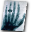
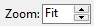
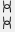

 Image Viewer
{kind=link}
The  Image Viewer module displays the simulation results (Fig. 21).
Image Viewer module displays the simulation results (Fig. 21).
{kind=link}
Fig. 21 Image Viewer module.
Upper toolbar
: A grayed out check mark means that no images have been loaded into Image Viewer before.
{kind=link}
 : A crossed out red circle means that you are currently viewing a preview of the simulation. The preview has a lower resolution and is calculated with different parameters for faster results.
: A crossed out red circle means that you are currently viewing a preview of the simulation. The preview has a lower resolution and is calculated with different parameters for faster results.
 : Run
: Run  the simulation and a green tick will appear indicating that the simulation was successful.
the simulation and a green tick will appear indicating that the simulation was successful.
The drop-down menu to the right of the icon offers different images of the simulation steps (energy density J/m² or primary intensities).
The available options depend on the current settings.
The three gray fields next to the drop-down menu show the mouse position (first gray field: X-axis, second gray field: Y-axis) and the intensity value of the displayed image at this position, where the unit dependents on the image type.
Lower toolbar
The display range controls indicate the minimum and maximum pixel value (intensity or thickness) used to display the current image. For manual contrast control, you may change those values with your keyboard. Press Enter when finished.
Optimize: If this function is activated, the display area is always automatically adjusted to the pixel value range of the current image. You can select a rectangular box of the image by mouse to limit the adjustment to the pixel value range within that ROI.
{kind=link}
Reset: Resets the display to the default range. The default settings depend on the image type, e.g., 0 … 65535 for 16bit images, or 0.5 … 3.5 for the optical density of X-ray films.
{kind=link}
Invert: Inverts the display to a negative of the image.
{kind=link}
 Zoom in and out with the up-down arrows right to the displayed zoom factor or by typing in the zoom factor. Alternatively, you may use the mouse wheel or the right mouse button. Default: Fit, image fits to window (automatic zoom factor).
Show the current image in actual size: one millimeter in the actual image corresponds to one millimeter on the display (1:1), or in pixel for pixel mode: one pixel in the actual image corresponds to one pixel on the display.
{kind=link}
{kind=link}
 Activates automatic zooming to fit the current image to the window.
Activates automatic zooming to fit the current image to the window.
 Zoom enlarges th current image to a selected part of the image. Draw a box with the mouse beforehand to select the desired ROI.
Zoom enlarges th current image to a selected part of the image. Draw a box with the mouse beforehand to select the desired ROI.
Right toolbar
 Save the current image.
Save the current image.
Opens the current image in an external viewer. Under Settings any suitable external viewer can be configured. Default: software ISee!
{kind=link}
Note
With the implementation of aRTist the software ISee! v1.11.1-free is provided as an external viewer. The free version lacks all saving facilities - you can load images and can do everything inside the program, but the saving of measurement results or filtered/transformed images is missing. Both, the free and licensed versions you can find here: http://www.uzscherpel.de/BAM/ic/index.html.
Displays the exposure latitude warning for over- or underexposed regions. Overexposed areas will be marked in red whereas underexposed areas will be marked in blue.
{kind=link}
The pixel for pixel mode changes between actual pixel size and screen pixel size. This option effects the zoom and the ruler.
Change image orientation opens a menu with different options to mirror or rotate the image.
{kind=link}
Reset is used for resetting the settings in the image orientation.
Mirror X/Mirror Y is used to reflect the image orientation on X-axis or Y-axis.
Rotate CW/Rotate CCW is used to rotate the image clockwise or counter-clockwise.
0° / 90° / 180° / 270° is used to orientate the image (between four different angles).
See also
The same menu like in Fig. 22 can be found in the Tools menu under Image Viewer → View → Orientation. Please note that the changes made with commands from either one of those menus do not have lasting effects, for example, when saving the image. If you want to permanently edit an image use the commands from the following menu: Tools → Image Viewer → Image.
{kind=link}
Fig. 22 Image View: Change image orientation.
Show ruler: An adjustable ruler is displayed over the image. It measures in millimeters or in pixels depending on pixel for pixel mode.
{kind=link}
Show legend opens an adjustable legend with the grey or thickness values. The minimum and maximum values correspond to the display range.
{kind=link}
Tools Menu: Image Viewer
In the following every command of the Image Viewer submenu from the Tools Menu (Fig. 23) will be explained.
{kind=link}
Fig. 23 Tools Menu, Image Viewer Menu.
This submenu offers specific settings for the Image Viewer and consists of different additional submenus:
File
Image
View
File
It consists of three additional submenus where you can find commands to open a new image from file, save the current simulation
(you may also use the Save button in Image Viewer) or clear the image list (Fig. 24).
{kind=link}
Fig. 24 Image Viewer, File Menu.
Image
Under Image you can find different filters and different options to mirror or rotate the current image (Fig. 25).
Note
Please note that changes made with commands from this submenu are permanent (for example when saving the image). For non-permanent modifications use commands from the View submenu.
{kind=link}
Fig. 25 Image Viewer, Image Menu.
Gradient, Laplacian, and Smooth are used to apply the corresponding filters.
Scale is used to fill in the values for X and Y scaling/resampling (Fig. 26). Next to the output fields is a button . When you click on this button, the symbol changes into an open chain  or into a closed chain . The closed chain mode indicates to preserve the aspect ratio of the image, i.e., when changing the X or Y value, the other value will be adjusted automatically.
{kind=link}
Fig. 26 Image Viewer, Image, Scale.
Mirror X/Y refinverts the pixel order in X or Y direction.
Rotate CW/CCW rotates the current image in 90 degree steps clockwise or counter-clockwise.
Math opens the ImageMath dialog (Fig. 27). It offers several arithmetic and point operations that can be applied to the current image.
The first drop-down menu of the ImageMath offers the following arithmetic or point operations. In order for them to work the input field for C or K has to be filled in. Except for the first two operations,
MultiplyByKandAddConstant, the actual numbers are not important. Press Compute to run the operation and Cancel to reverse it:MultiplyByKis used for the pointwise multiplication of each pixel with the value K.AddConstantis used for the pointwise addition of each pixel with the constant C.Exptakes the exponential of each pixel (e raised to the powr of the pixel value, where e is the base of a natural log).Logtakes the natural log of each pixel.Invertinverts the current image.AbsoluteValuetakes the absolute value of each pixel.Squaresquares the value of each pixel.SquareRoottakes the square root of each pixel.Sincalculates the sine of each pixel.Coscalculates the cosine of each pixel.ATANcalculates the arctangent of each pixel.
The following operations calculate a new image out of two images therefore the third drop-down menu is enabled. Hint: C and K may be left empty.
Addsums the corresponding pixel values of the two images.Subtractsubstracts the corresponding pixel values of the second image from the first image.Multiplymultiplies the corresponding pixel values of the two images.Dividedivides the corresponding pixel values of the first image by the second image.Minshows the minimum grey values of the two images.Maxshows the maximum grey values of the two images.
{kind=link}
Fig. 27 Image Viewer, Image, Math.
View
Under View you will find commands to change the display, but not the content of an image(Fig. 28).
Note
Please note that the changes made here are non-permanent modifications and will not be visible when you save the image or open it in an external viewer as opposed to the commands found in the Image submenu.
{kind=link}
Fig. 28 Image Viewer, View, Orientation Menu.
Interpolate activates/deactivates interpolation. aRTist uses linear interpolation.
Logarithmic is a point operator based on the log function and changes the dynamic range of the image.
Orientation is used for the commands, which also can be accessed with the button in the Image Viewer (see: Bar on the right).